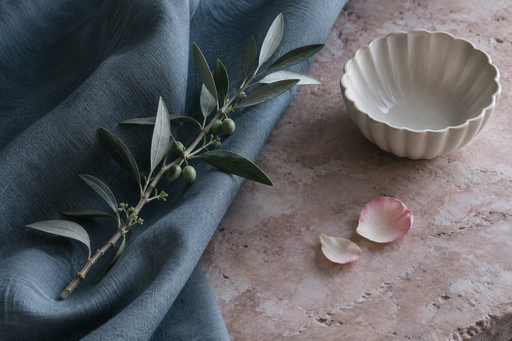
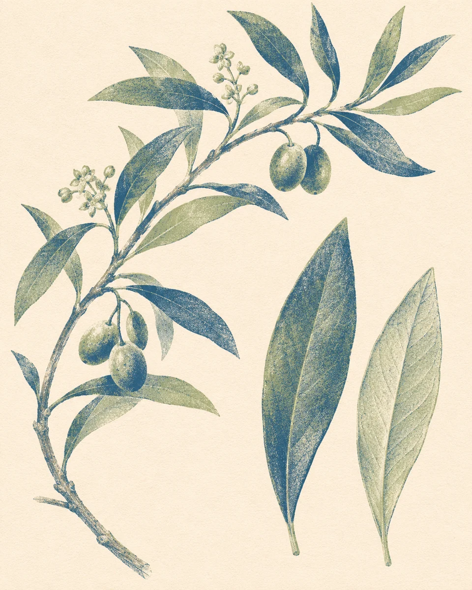
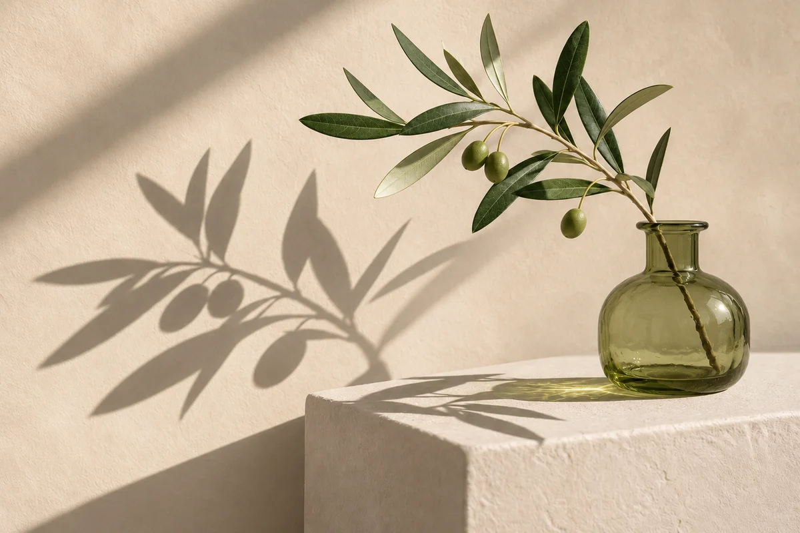

Dietro le composizioni
Prima del vaso, c’è il tavolo.
Tre gesti, un ramo
Prima di scegliere il vaso, guardiamo come si piega il ramo. Da quella curva prendono forma gli accostamenti e lo spazio tra gli steli.

Scegliere il primo ramo
Appoggiamo gli steli sul tavolo e li osserviamo da più lati. Un ramo che si piega verso il basso può suggerire una composizione larga, adatta a una ciotola bassa.
Provare gli accostamenti
Accanto al ramo proviamo una foglia opaca, un fiore chiaro, una spiga sottile. A volte basta voltare una foglia per far emergere un verde che prima restava in ombra.
Lasciare passare la luce
Quando la composizione è nel vaso, facciamo un passo indietro. Se due steli si confondono, ne spostiamo uno. Lo spazio tra loro fa risaltare entrambe le forme.
Nota di bottega
Guarda anche l’ombra
Avvicina il vaso a una parete chiara e ruotalo lentamente. Quando due steli si sovrappongono nell’ombra, basta spostarne uno di poco per vedere di nuovo la curva del ramo.

Da provare a casa
Un ramo, due posizioni
Ti servono
- Un ramo
- Un vaso
- Una parete chiara
- Metti il ramo nel vaso con la curva rivolta verso la luce.
- Ruota il vaso di mezzo giro e guarda dove cade l’ombra.
- Fai un passo indietro e scegli la posizione in cui la curva si legge meglio.
Cosa osservare In quale posizione riesci a distinguere meglio la punta di ogni stelo?